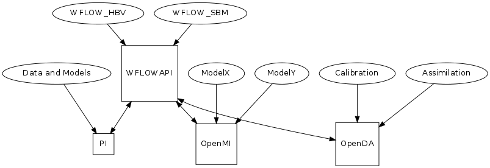

Welcome to wflow’s documentation!¶
Note
$Id: index.rst 908 2014-01-16 11:42:57Z schelle $ $HeadURL: https://repos.deltares.nl/repos/Hydrology/trunk/OpenStreams/doc/wflow/sphinx/index.rst $
This documentation is for version 1.0 of wflow, release 1.0RC1 This documentation was generated March 13, 2014
Introduction¶
This document describes the wflow distributed hydrological modelling platform. wflow is part of the Deltares’ OpenStreams project (http://www.openstreams.nl). Wflow consists of a set of python programs that can be run on the command line and perform hydrological simulations. The models are based on the PCRaster python framework. In wflow this framework is extended (the wf_DynamicFramework class) so that models build using the framework can be controlled using the API. Links to OpenMI (www.openmi.org) and OpenDAP (www.openda.org) are being tested.
The wflow distributed hydrological model platform currently includes the following models:
- the wflow_sbm model (derived from topog_sbm )
- the wflow_hbv model (a distributed version of the HBV96 model).
- the wflow_gr4 model (a distributed version of the gr4h/d models).
- the wflow_wave model (a dynamic wave model that can run on the output of the sbm and hbv models).
- the wflow_floodmap model (a flood mapping model that can use the output of the wflow_wave model or de sbm and hbv models).
The low level api and links to other frameworks allow the models to be linked as part of larger modelling systems:

Note
wflow is part of the Deltares OpenStreams project (http://www.openstreams.nl). The OpenStreams project is a work in progress. Wflow functions as a toolkit for distributed hydrological models within OpenStreams.
Warning
At the moment the models and documentation are being worked on. Things that worked yesterday may stop working tomorrow.
The different wflow models share the same structure but are fairly different with respect to the conceptualisation. The shared software framework includes the basic maps (dem, landuse, soil etc) and the hydrological routing via the kinematic wave. The Python class framework also exposes the models as an API and is based on the PCRaster/Python version 4.0 Beta (www.pcraster.eu).
The wflow_sbm model maximises the use of available spatial data. Soil depth, for example, is estimated from the DEM using a topographic wetness index . The model is derived from the [CQFLOW] model that has been applied in various countries, most notably in Central America. The wflow_hbv model is derived from the HBV-96 model but does not include the routing functions, instead it uses the same kinematic wave routine as the wflow_sbm model to route the water downstream.
The models are programmed in a dynamic GIS language called PCRaster available as a Python extension. As such, the structure of the model is transparent, can be changed by other modellers easily, and the system allows for rapid development. The PCRaster version used here is a beta version that comes with bindings to the Python language. In order to run the model both PCRaster and Python 2.7 are needed.
Note
A pdf version of this version of the documentation can be found at (http://publicwiki.deltares.nl/download/attachments/76613461/wflow.pdf)
The wflow_hbv model¶
The wflow_sbm model¶
The wflow_gr4 model¶
The wflow_wave model¶
The wflow_floodmap model¶
Building a model¶
How to use the models¶
The wflow Delft-FEWS adapter¶
wflow modules and libraries¶
Examples and tests¶
Adding a new model using the framework¶
OpenDA¶
Indices and tables¶
References¶
| [CQFLOW] | Köhler, L., Mulligan, M., Schellekens, J., Schmid, S. and Tobón, C.: Final Technical Report DFID-FRP Project no. R7991 Hydrological impacts of converting tropical montane cloud forest to pasture, with initial reference to northern Costa Rica.,, 2006. |
TODO¶
Todo
rewrite and simplify
(The original entry is located in C:\Users\schelle\AppData\Local\Continuum\Anaconda\Scripts\wflow_adapt.py:docstring of wflow_adapt, line 23.)
Todo
add support for a coarser delwaq network based on supplied map.
(The original entry is located in C:\Users\schelle\AppData\Local\Continuum\Anaconda\Scripts\wflow_delwaq.py:docstring of wflow_delwaq, line 58.)
Todo
Test option to seperate construction of network from filling of the input arrays
(The original entry is located in C:\Users\schelle\AppData\Local\Continuum\Anaconda\Scripts\wflow_delwaq.py:docstring of wflow_delwaq, line 63.)
Todo
Ad support to not only follow the kinematic wave reservoir but also the flow trough the soil reservoirs. Basically make three layers:
- kinematic wave reservoir (surface water)
- unsaturated store (only vertical flow)
- saturated store (horizontal and vertical flow)
(The original entry is located in C:\Users\schelle\AppData\Local\Continuum\Anaconda\Scripts\wflow_delwaq.py:docstring of wflow_delwaq, line 68.)
Todo
- add labeling of different inflows ( the information is already present)
(The original entry is located in C:\Users\schelle\AppData\Local\Continuum\Anaconda\Scripts\wflow_delwaq.py:docstring of wflow_delwaq.dw_WriteBoundlist, line 8.)
Todo
Add exta column with boundary labels (of the inflows)
(The original entry is located in C:\Users\schelle\AppData\Local\Continuum\Anaconda\Scripts\wflow_delwaq.py:docstring of wflow_delwaq.dw_mkDelwaqPointers, line 30.)
Todo
add routing state vars
(The original entry is located in C:\Users\schelle\AppData\Local\Continuum\Anaconda\Scripts\wflow_gr4.py:docstring of wflow_gr4.WflowModel.stateVariables, line 10.)